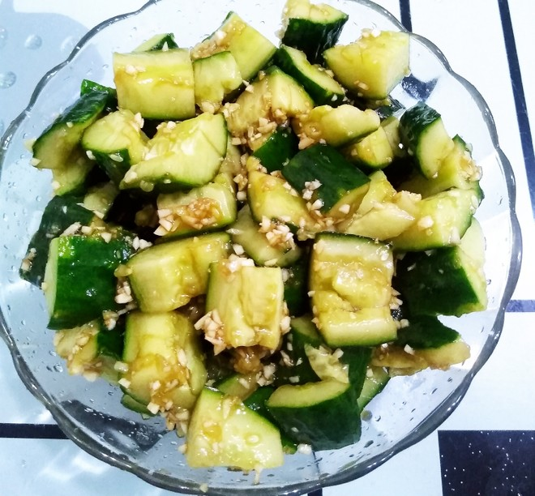

Smashed Cucumeber Salad

This is a killer side to go along with any deep and savory dish. When you need that cut of heat and sour this is always my go to.
Ingredients
- 1 long hothouse cucumber or 3 small persian cucumbers (340 grams total)
- half a teaspoon of salt
- 3 garlic cloves, minced
- 2 teapsoons of soy sauce
- 1 tablespoon Chinkiang black vinegar (find this!) or pale rice vinegar
- 1 teaspoon toasted sesame oil
- half a tablespoon of chili oil
Instructions
- Trim off both ends of the cucumber, lay it flat on a cutting board then smash them with a rolling pin (to prevent mess you can wrap the cucumbers in a tea towel first).
- After being smashed cut the cucumber at a diagonal into half an inch bite size pieces.
- Place these pieces into a bowl, sprinkle them with salt then cover and refrigerate for 15 mintues.
- After 15 minutes, take the bowl out of the fridge, drain off any water the cucumber may have release.
- To the bowl, add the garlic, sguar, soy sauce, vinegar, sesame oil and chili oil. Toss to coat the cucumber.
- You can now serve this immediately or store them in an air tight container in the fridge for up to a week.